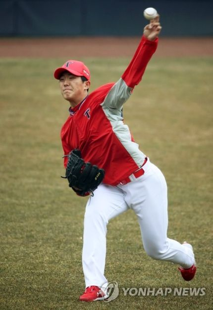

포심 패스트볼, 슬라이더, 커브를 던지며, 포심 패스트볼 최고 구속이 149km/h이다. 평균 구속도 최고 구속과 큰 차이가 나지 않는 편. 예쁜 폼으로 부드럽게 던진다. 부상의 위험이 적다는 장점과 디셉션이 없고 타자가 타이밍을 잡기 쉽다는 단점이 공존한다. 때문에 구속에 비해 피홈런이 많은 편이다. 본인이 말하길 김진욱은 높은 타점에서 찍어누르는 느낌이고 본인은 편하게 던지는 스타일이라고. 김여울과의 인터뷰에서 경기 운영 능력이 강점 같다는 말에 대해 본인은 부족하다며 프로에서 경기 운영 능력을 가장 배우고 싶다고 답했다. 기록만 보자면 김기훈은 묵직한 구위를 바탕으로 가운데 보고 던지는 유형이라면, 이의리는 좌우존을 넓게 쓰는 유형이다. 제구 또한 좋은편이고 공격적인 성향을 가지고있어 삼진이 많은편이다. 2020 드래프트에서 장재영에 이어 top2 유망주 순위를 김진욱과 다투고 있다.  KIA 타이거즈 소속의 좌완투수. 2021년 1차 지명으로 입단했다.